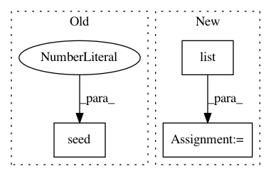

5a7514ccb18a3a506d453dd048c665c33835ee56,pandas/tests/indexes/categorical/test_indexing.py,TestGetIndexer,test_get_indexer_non_unique,#TestGetIndexer#,207
Before Change
idx.get_indexer(idx, method="invalid")
def test_get_indexer_non_unique(self):
np.random.seed(123456789)
ci = CategoricalIndex(list("aabbca"), categories=list("cab"), ordered=False)
oidx = Index(np.array(ci))
After Change
idx1 = CategoricalIndex(list("aabcde"), categories=list("edabc"))
idx2 = CategoricalIndex(list("abf"))
for indexer in [idx2, list("abf"), Index(list("abf"))]:
msg = "Reindexing only valid with uniquely valued Index objects"
with pytest.raises(InvalidIndexError, match=msg):
idx1.get_indexer(idx2)
r1, _ = idx1.get_indexer_non_unique(idx2)
expected = np.array([0, 1, 2, -1], dtype=np.intp)
tm.assert_almost_equal(r1, expected)
def test_get_indexer_method(self):
idx1 = CategoricalIndex(list("aabcde"), categories=list("edabc"))
idx2 = CategoricalIndex(list("abf"))
In pattern: SUPERPATTERN
Frequency: 3
Non-data size: 3
Instances
Project Name: pandas-dev/pandas
Commit Name: 5a7514ccb18a3a506d453dd048c665c33835ee56
Time: 2020-12-11
Author: jbrockmendel@gmail.com
File Name: pandas/tests/indexes/categorical/test_indexing.py
Class Name: TestGetIndexer
Method Name: test_get_indexer_non_unique
Project Name: pandas-dev/pandas
Commit Name: 8051248bedd7387babba24c5756c286987c42eb1
Time: 2021-02-21
Author: jbrockmendel@gmail.com
File Name: asv_bench/benchmarks/hash_functions.py
Class Name:
Method Name: setup
Project Name: flow-project/flow
Commit Name: 4f2e824895fba1d3600098ef2a066279f3ee91a5
Time: 2017-07-20
Author: akreidieh@gmail.com
File Name: cistar-dev/cistar/scenarios/loop/gen.py
Class Name: CircleGenerator
Method Name: make_routes